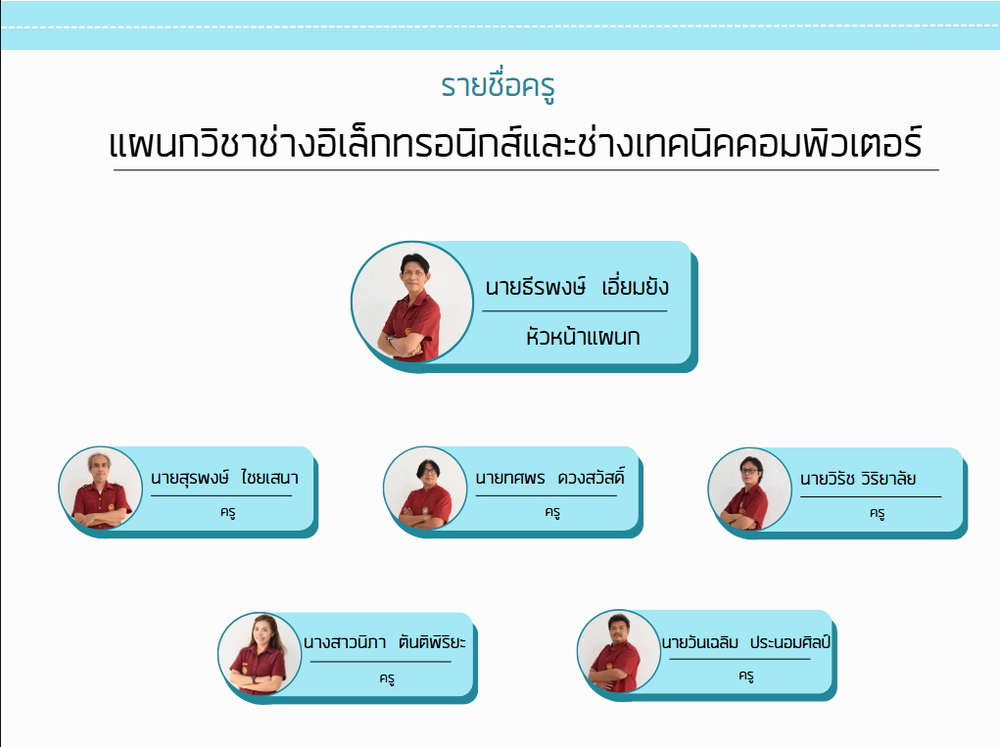
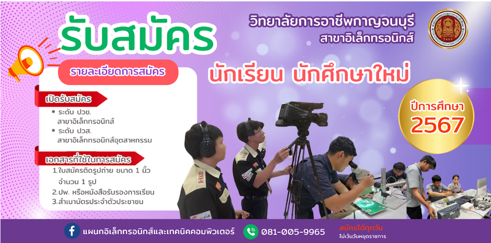

ยินดีต้อนรับสู่แผนกวิชา ช่างอิเล็กทรอนิกส์และช่างเทคนิคคอมพิวเตอร์ วิทยาลัยการอาชีพกาญจนบุรี
อาจารย์ผู้สอน
รับสมัครนักศึกษา
เกี่ยวกับแผนกวิชาช่างอิเล็กทรอนิกส์และเทคนิคคอมพิวเตอร์
การเรียนการสอน สาขาวิชาช่างอิเล็กทรอนิกส์ คือ สาขาที่มีความเกี่ยวข้องกับเครื่องไฟฟ้า อิเล็กทรอนิกส์ และการสื่อสาร อาทิเช่น การประกอบเครื่องคอมพิวเตอร์ การประกอบเครื่องขยายเสียง การติดตั้งจานรับสัญญาณดาวเทียม การตรวจซ่อมโทรทัศน์ เป็นต้น นอกจากนั้นยังมีการเขียนโปรแกรมคอนโทรลการทำงานแบบอัตโนมัติในหุ่ยนต์และในเครื่องมือเครื่องใช้ไฟฟ้าต่าง ๆ ส าขาวิชาอิเล็กทรอนิกส์ถือว่าเป็นสาขาที่มีความเหี่ยวข้องกับชีวิตประจำวันเป็นอย่างมาก